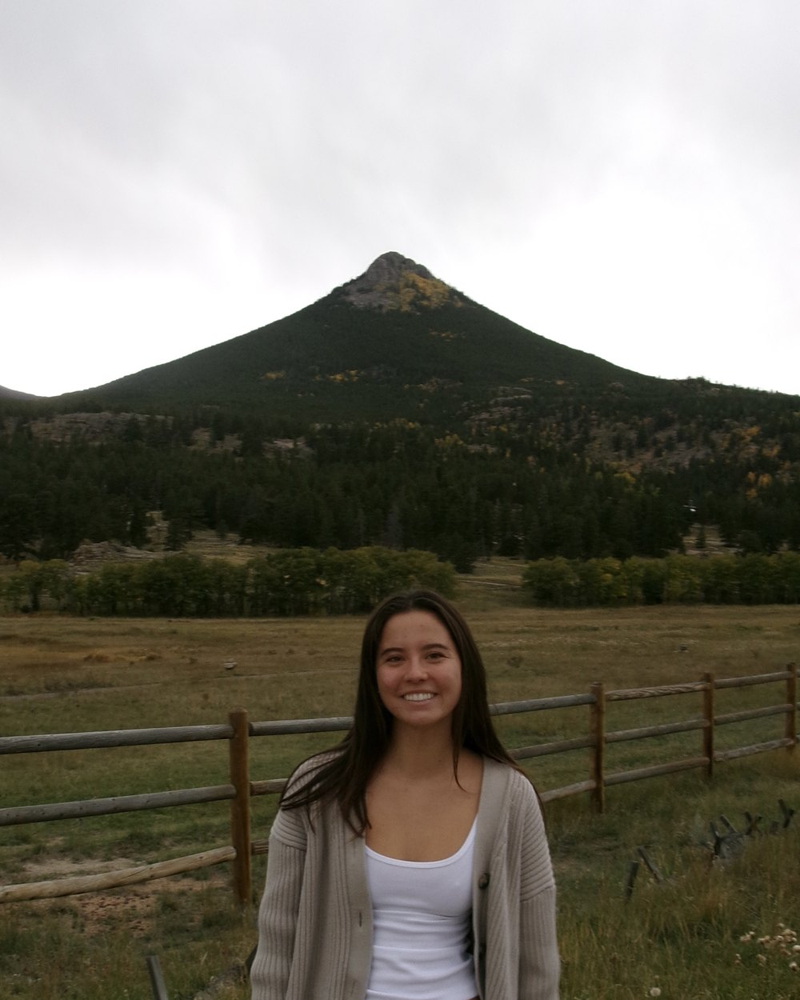

Julia
Miyamoto
Creative Technology & Design · Engineering Management
Student at the University of Colorado Boulder. I plan and run complex operations, lead teams under pressure, and design for the web and iOS. I'm looking for an operations or project management role.

Projects
Engineering, software, project management, design, and writing from my time at CU Boulder.
About
I study Creative Technology and Design in CU Boulder's College of Engineering and Applied Science, with a minor in Engineering Management. My coursework covers operations, project management, organizational leadership, web and mobile development, IoT devices, systems design, and product engineering.
Outside class I work as an LA County ocean lifeguard and junior lifeguard instructor, where I run daily programs for 30 to 60 participants across multiple activity zones. That work taught me to plan carefully, communicate clearly, and stay calm when things change fast.
- DegreeB.S. Creative Technology and Design
- MinorEngineering Management
- HonorsDean's List, 2025 and 2026
- MemberSociety of Women Engineers
Project management
- Milestone tracking
- Timeline management
- SOP development
- Team coordination
Analytical
- Data collection and analysis
- Process improvement
- Cost modeling
- Microsoft Excel and Office
Technical
- UX/UI and accessible web design
- Web and iOS development
- React Native
- Multimedia
Leadership
- Written and verbal communication
- Team leadership
- Calm under pressure
- Adaptability
Experience
-
Sep 2025 – Present
Nanny and House Manager
Private family, Boulder, CO
- Provide full-time care for a nonverbal 2-year-old, communicating through nonverbal cues and consistent routines.
- Manage household operations, including daily schedules, meal planning, errands, and supplies.
- Coordinate with parents on routines, developmental goals, and household priorities.
-
Jun 2024 – Present
Junior Lifeguard Instructor
Los Angeles County Fire Department, Los Angeles, CA
- Develop and lead a structured daily curriculum for youth programs of 30–60 participants.
- Manage daily operations, resource allocation, and safety compliance across multiple activity zones.
- Coordinate a team of instructors to meet program milestones and safety benchmarks.
- Track participant progress and adjust programming based on performance data.
-
Jun 2023 – Present
Ocean Lifeguard
Los Angeles County Fire Department, Los Angeles, CA
- Monitor changing beach and ocean conditions to identify and mitigate safety hazards.
- Respond to emergencies with composure, following standard operating procedures.
- Maintain accurate incident and conditions logs for operational continuity and reporting.
-
Jun 2023 – 2025
Social Media and Communications Volunteer
Los Angeles County Surf Lifesaving Association
- Managed the digital communications strategy for the @lacountyslsa Instagram account, growing engagement.
- Captured, edited, and produced multimedia content for events on deadline.
- Planned content calendars around key organizational milestones.
-
Nov 2022
Voting Clerk
Los Angeles County Registrar-Recorder, Los Angeles, CA
- Managed high-volume voter check-in during the 2022 general election.
- Diagnosed and resolved real-time technology issues to minimize delays.
- Coordinated line management to maintain efficiency and procedural compliance.
Emergency Medical Responder (EMR), American Red Cross
Ocean Lifeguard, Los Angeles County Fire Department